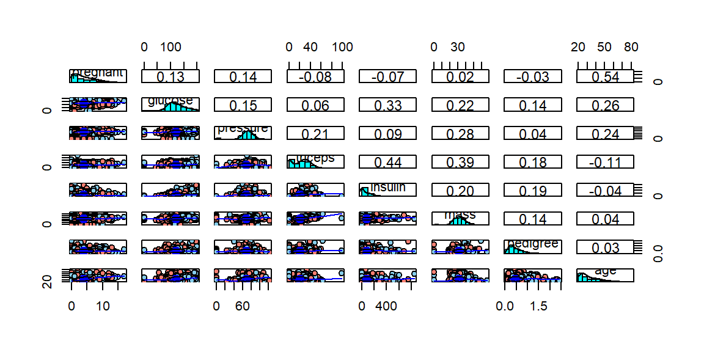
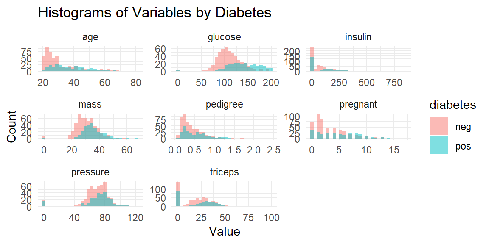
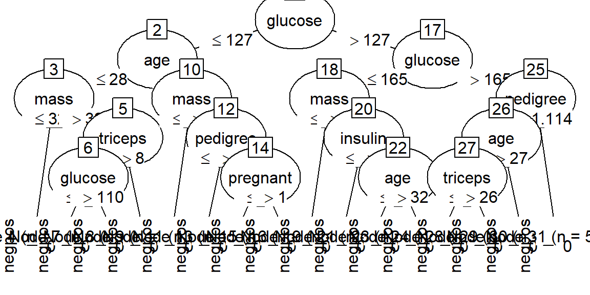

library(mlbench)
data(PimaIndiansDiabetes)
df <- PimaIndiansDiabetes
tar.idx <- 9C50
パッケージの概要
C50パッケージではC5.0アルゴリズムを用いた決定木モデルを使用できます。
使用例：PimaIndiansDiabetesデータの分類
PimaIndiansDiabetesデータを用いて、種々の項目からその患者が糖尿病患者であるかを判定する決定木モデルをC50パッケージを用いて構築します。
データの中身の確認です。（head）
head(df) pregnant glucose pressure triceps insulin mass pedigree age diabetes
1 6 148 72 35 0 33.6 0.627 50 pos
2 1 85 66 29 0 26.6 0.351 31 neg
3 8 183 64 0 0 23.3 0.672 32 pos
4 1 89 66 23 94 28.1 0.167 21 neg
5 0 137 40 35 168 43.1 2.288 33 pos
6 5 116 74 0 0 25.6 0.201 30 negデータの中身の確認です。（str）
str(df)'data.frame': 768 obs. of 9 variables:
$ pregnant: num 6 1 8 1 0 5 3 10 2 8 ...
$ glucose : num 148 85 183 89 137 116 78 115 197 125 ...
$ pressure: num 72 66 64 66 40 74 50 0 70 96 ...
$ triceps : num 35 29 0 23 35 0 32 0 45 0 ...
$ insulin : num 0 0 0 94 168 0 88 0 543 0 ...
$ mass : num 33.6 26.6 23.3 28.1 43.1 25.6 31 35.3 30.5 0 ...
$ pedigree: num 0.627 0.351 0.672 0.167 2.288 ...
$ age : num 50 31 32 21 33 30 26 29 53 54 ...
$ diabetes: Factor w/ 2 levels "neg","pos": 2 1 2 1 2 1 2 1 2 2 ...各変数の意味は以下の通りです。
| 変数名 | データ型 | 概要 |
|---|---|---|
| pregnant | num | 妊娠回数 |
| glucose | num | 血漿グルコース濃度（負荷試験） |
| pressure | num | 拡張期血圧 [mm Hg] |
| triceps | num | 上腕三頭筋皮膚襞の厚さ [mm] |
| insulin | num | 2時間血清インスリン [mu U/ml] |
| mass | num | BMI |
| pedigree | num | 糖尿病血統機能 |
| age | num | 年齢 |
| diabetes | Factor | クラス変数（糖尿病の検査） |
summaryを表示します。
summary(df) pregnant glucose pressure triceps
Min. : 0.000 Min. : 0.0 Min. : 0.00 Min. : 0.00
1st Qu.: 1.000 1st Qu.: 99.0 1st Qu.: 62.00 1st Qu.: 0.00
Median : 3.000 Median :117.0 Median : 72.00 Median :23.00
Mean : 3.845 Mean :120.9 Mean : 69.11 Mean :20.54
3rd Qu.: 6.000 3rd Qu.:140.2 3rd Qu.: 80.00 3rd Qu.:32.00
Max. :17.000 Max. :199.0 Max. :122.00 Max. :99.00
insulin mass pedigree age diabetes
Min. : 0.0 Min. : 0.00 Min. :0.0780 Min. :21.00 neg:500
1st Qu.: 0.0 1st Qu.:27.30 1st Qu.:0.2437 1st Qu.:24.00 pos:268
Median : 30.5 Median :32.00 Median :0.3725 Median :29.00
Mean : 79.8 Mean :31.99 Mean :0.4719 Mean :33.24
3rd Qu.:127.2 3rd Qu.:36.60 3rd Qu.:0.6262 3rd Qu.:41.00
Max. :846.0 Max. :67.10 Max. :2.4200 Max. :81.00 psychパッケージのpairs.panelsを用いて、散布図の一覧を表示します。
library(psych)df.x <- df[-tar.idx]
df.y <- df[tar.idx]
df.y <- ifelse(df.y == "pos", 1, 2)
pairs.panels(df.x, bg=c("skyblue", "salmon")[df.y], pch=21)
ggplot2パッケージを用いて、ヒストグラムを表示します。変数ごとにpos/negの分布の傾向を把握することができます。
library(ggplot2)
Attaching package: 'ggplot2'The following objects are masked from 'package:psych':
%+%, alphalibrary(tidyr)
library(dplyr)
Attaching package: 'dplyr'The following objects are masked from 'package:stats':
filter, lagThe following objects are masked from 'package:base':
intersect, setdiff, setequal, union# 数値変数だけを抽出（diabetes以外）
num_vars <- names(df)[sapply(df, is.numeric)]
# 長い形式に変換
df_long <- df %>%
pivot_longer(cols = all_of(num_vars), names_to = "variable", values_to = "value")
# ヒストグラムを1つの図にまとめて作成
ggplot(df_long, aes(x = value, fill = diabetes)) +
geom_histogram(position = "identity", alpha = 0.5, bins = 30) +
facet_wrap(~variable, scales = "free") +
labs(title = "Histograms of Variables by Diabetes",
x = "Value", y = "Count") +
theme_minimal()
モデル構築
モデル生成のための訓練データと、モデル評価のためのテストデータに分割します。データ割合は訓練データを7割、テストデータを3割とします。
# 再現性のためにシードを設定
set.seed(1234)
# データの分割
n <- nrow(df)
train.rate <- 0.7
# データの抽出
train.set <- sample(n, n * train.rate)
train.df <- df[train.set, ]
test.set <- setdiff(1:n, train.set)
test.df <- df[test.set, ]モデルを生成します。
library(C50)Warning: package 'C50' was built under R version 4.5.1model <- C5.0(
x = train.df[-tar.idx],
y = train.df[[tar.idx]]
)summaryを用いると、モデルのサマリが表示されます。
summary(model)
Call:
C5.0.default(x = train.df[-tar.idx], y = train.df[[tar.idx]])
C5.0 [Release 2.07 GPL Edition] Fri Aug 1 17:34:30 2025
-------------------------------
Class specified by attribute `outcome'
Read 537 cases (9 attributes) from undefined.data
Decision tree:
glucose <= 127:
:...age <= 28:
: :...mass <= 32.2: neg (113/1)
: : mass > 32.2:
: : :...triceps > 8: neg (64/8)
: : triceps <= 8:
: : :...glucose <= 110: neg (7)
: : glucose > 110: pos (4)
: age > 28:
: :...mass <= 26.3: neg (33/1)
: mass > 26.3:
: :...pedigree <= 0.845: neg (100/30)
: pedigree > 0.845:
: :...pregnant <= 1: neg (5/1)
: pregnant > 1: pos (10)
glucose > 127:
:...glucose <= 165:
:...mass <= 29.9: neg (55/15)
: mass > 29.9:
: :...insulin <= 196: pos (70/20)
: insulin > 196:
: :...age <= 32: neg (13/1)
: age > 32: pos (8/1)
glucose > 165:
:...pedigree > 1.114: neg (5/2)
pedigree <= 1.114:
:...age > 27: pos (41/1)
age <= 27:
:...triceps <= 26: neg (3)
triceps > 26: pos (6)
Evaluation on training data (537 cases):
Decision Tree
----------------
Size Errors
16 81(15.1%) <<
(a) (b) <-classified as
---- ----
339 22 (a): class neg
59 117 (b): class pos
Attribute usage:
100.00% glucose
89.76% mass
75.79% age
31.66% pedigree
16.95% insulin
15.64% triceps
2.79% pregnant
Time: 0.0 secsplotを用いると、決定木の様子が可視化されます。(図がつぶれてしまうことがありますので、参考程度です)
plot(model)
構築したモデルを使用して予測を行います。
res_pred <- predict(model, test.df[-tar.idx])予測結果から得られる混同行列を確認します。
(Summaryにて訓練データでの混同行列が確認できるので、以下テストデータでの混同行列の表示を省略します)
res_act <- test.df[[tar.idx]]
conf_mat <- table(res_act, res_pred)
print(conf_mat) res_pred
res_act neg pos
neg 116 23
pos 47 45各種評価指標を確認します。計算用の関数の定義です。
create_df_res <- function(cmat){
TN <- cmat[1,1]
FP <- cmat[1,2]
FN <- cmat[2,1]
TP <- cmat[2,2]
# 正解率：どれだけ正しく分類できたかの割合
acc <- round((TP + TN) / (TP + TN + FN + FP), 3)
# 適合率：陽性と判定されたものがどれだけ正しく陽性であるかの割合
prec <- round(TP / (TP + FP), 3)
# 再現率（真陽性率）：実際に陽性のものをどれだけ正しく陽性と判定できたかの割合
rec <- round(TP / (TP + FN), 3)
# F値：適合率と再現率の調和平均（両者はトレードオフの関係）
Fval <- round(2 * rec * prec / (rec + prec), 3)
# 真陰性率：実際に陰性のものをどれだけ正しく陰性と判定できたかの割合
TNRat <- round(TN / (TN + FP), 3)
df_rat <- data.frame(
Item = c("正解率", "適合率", "再現率（真陽性率）", "F値", "真陰性率"),
Rate = c(acc, prec, rec, Fval, TNRat)
)
df_rat
}data.frameの出力整形用です。
library(knitr)
library(kableExtra)
Attaching package: 'kableExtra'The following object is masked from 'package:dplyr':
group_rowsshow_df <- function(df, cap){
kable(df, format = "pandoc", caption = cap) %>%
kable_styling(full_width = FALSE, position = "left")
}各種指標を確認します。
df_res <- create_df_res (conf_mat)
show_df(df_res, "結果")| Item | Rate |
|---|---|
| 正解率 | 0.697 |
| 適合率 | 0.662 |
| 再現率（真陽性率） | 0.489 |
| F値 | 0.562 |
| 真陰性率 | 0.835 |
C5.0のハイパーパラメーター
以下、C5.0モデルのパラメータをいくつか変更し、モデル性能の差を簡易的に見てゆきます。
trials
trials:C5.0モデルはブースティングを実装しており、ブースティングの繰り返しの数を設定できます。
model_trials <- C5.0(
x = train.df[-tar.idx],
y = train.df[[tar.idx]],
trials = 3
)
summary(model_trials)
Call:
C5.0.default(x = train.df[-tar.idx], y = train.df[[tar.idx]], trials = 3)
C5.0 [Release 2.07 GPL Edition] Fri Aug 1 17:34:31 2025
-------------------------------
Class specified by attribute `outcome'
Read 537 cases (9 attributes) from undefined.data
----- Trial 0: -----
Decision tree:
glucose <= 127:
:...age <= 28:
: :...mass <= 32.2: neg (113/1)
: : mass > 32.2:
: : :...triceps > 8: neg (64/8)
: : triceps <= 8:
: : :...glucose <= 110: neg (7)
: : glucose > 110: pos (4)
: age > 28:
: :...mass <= 26.3: neg (33/1)
: mass > 26.3:
: :...pedigree <= 0.845: neg (100/30)
: pedigree > 0.845:
: :...pregnant <= 1: neg (5/1)
: pregnant > 1: pos (10)
glucose > 127:
:...glucose <= 165:
:...mass <= 29.9: neg (55/15)
: mass > 29.9:
: :...insulin <= 196: pos (70/20)
: insulin > 196:
: :...age <= 32: neg (13/1)
: age > 32: pos (8/1)
glucose > 165:
:...pedigree > 1.114: neg (5/2)
pedigree <= 1.114:
:...age > 27: pos (41/1)
age <= 27:
:...triceps <= 26: neg (3)
triceps > 26: pos (6)
----- Trial 1: -----
Decision tree:
glucose > 154: pos (75.3/15.4)
glucose <= 154:
:...mass <= 26.3: neg (96.8/8.6)
mass > 26.3:
:...age <= 28:
:...pressure <= 44: pos (9.1/2.4)
: pressure > 44: neg (150.8/33.5)
age > 28:
:...insulin <= 142: neg (163.6/79.5)
insulin > 142: pos (41.4/9.3)
----- Trial 2: -----
Decision tree:
glucose <= 120: neg (213.2/29.8)
glucose > 120:
:...mass <= 29.9:
:...age <= 25: neg (19.5)
: age > 25:
: :...glucose <= 164: neg (47.7/15.6)
: glucose > 164: pos (6.8)
mass > 29.9:
:...pedigree <= 0.315:
:...age <= 30: neg (22.9/2.1)
: age > 30: pos (36.5/13.9)
pedigree > 0.315:
:...pressure <= 66: pos (29.6/3.3)
pressure > 66:
:...age > 49: pos (19.1/2.3)
age <= 49:
:...insulin > 465: neg (5.4)
insulin <= 465:
:...mass > 46.8: pos (10.3)
mass <= 46.8:
:...glucose <= 123: neg (5.8)
glucose > 123:
:...pressure <= 70: pos (11.2/0.7)
pressure > 70:
:...glucose > 156: pos (14.7/2.3)
glucose <= 156:
:...glucose <= 132: pos (16.6/3.5)
glucose > 132: neg (32.9/11.4)
Evaluation on training data (537 cases):
Trial Decision Tree
----- ----------------
Size Errors
0 16 81(15.1%)
1 6 110(20.5%)
2 15 94(17.5%)
boost 79(14.7%) <<
(a) (b) <-classified as
---- ----
349 12 (a): class neg
67 109 (b): class pos
Attribute usage:
100.00% glucose
100.00% mass
99.81% age
51.40% pedigree
46.55% pressure
45.81% insulin
15.64% triceps
2.79% pregnant
Time: 0.0 secs結果を確認します。各種数値が向上していることが分かります。
res_trials_pred <- predict(model_trials, test.df[-tar.idx])
conf_mat_trials <- table(res_act, res_trials_pred)
df_res_trials <- create_df_res(conf_mat_trials)
show_df(df_res_trials, "結果（trials）")| Item | Rate |
|---|---|
| 正解率 | 0.740 |
| 適合率 | 0.750 |
| 再現率（真陽性率） | 0.522 |
| F値 | 0.616 |
| 真陰性率 | 0.885 |
winnow
winnow：デフォルトはFALSEです。TRUEにすると、重要でない特徴量を削減してくれます。
model_winnow <- C5.0(
x = train.df[-tar.idx],
y = train.df[[tar.idx]],
control = C5.0Control(winnow = TRUE)
)
summary(model_winnow)
Call:
C5.0.default(x = train.df[-tar.idx], y = train.df[[tar.idx]], control
= C5.0Control(winnow = TRUE))
C5.0 [Release 2.07 GPL Edition] Fri Aug 1 17:34:32 2025
-------------------------------
Class specified by attribute `outcome'
Read 537 cases (9 attributes) from undefined.data
4 attributes winnowed
Estimated importance of remaining attributes:
29% glucose
5% age
1% insulin
<1% pedigree
Decision tree:
glucose <= 127: neg (336/55)
glucose > 127:
:...glucose > 165: pos (55/7)
glucose <= 165:
:...age <= 23: neg (25/5)
age > 23:
:...pedigree > 0.722: pos (21/3)
pedigree <= 0.722:
:...pedigree > 0.661: neg (6)
pedigree <= 0.661:
:...pedigree <= 0.305: neg (48/19)
pedigree > 0.305: pos (46/15)
Evaluation on training data (537 cases):
Decision Tree
----------------
Size Errors
7 104(19.4%) <<
(a) (b) <-classified as
---- ----
336 25 (a): class neg
79 97 (b): class pos
Attribute usage:
100.00% glucose
27.19% age
22.53% pedigree
Time: 0.0 secs結果の確認です。最初のモデルよりも正解率は高いですが、F値は下がりました。
res_winnow_pred <- predict(model_winnow, test.df[-tar.idx])
conf_mat_winnow <- table(res_act, res_winnow_pred)
df_res_winnow <- create_df_res(conf_mat_winnow)
show_df(df_res_winnow, "結果（winnow）")| Item | Rate |
|---|---|
| 正解率 | 0.710 |
| 適合率 | 0.736 |
| 再現率（真陽性率） | 0.424 |
| F値 | 0.538 |
| 真陰性率 | 0.899 |
CF
CF：信頼係数です。デフォルトは0.25です。小さくすると過学習を防いでくれます。
model_CF <- C5.0(
x = train.df[-tar.idx],
y = train.df[[tar.idx]],
control = C5.0Control(CF = 0.1)
)
summary(model_CF)
Call:
C5.0.default(x = train.df[-tar.idx], y = train.df[[tar.idx]], control
= C5.0Control(CF = 0.1))
C5.0 [Release 2.07 GPL Edition] Fri Aug 1 17:34:32 2025
-------------------------------
Class specified by attribute `outcome'
Read 537 cases (9 attributes) from undefined.data
Decision tree:
glucose <= 127:
:...age <= 28: neg (188/13)
: age > 28:
: :...mass <= 26.3: neg (33/1)
: mass > 26.3:
: :...pedigree <= 0.845: neg (100/30)
: pedigree > 0.845: pos (15/4)
glucose > 127:
:...glucose > 165: pos (55/7)
glucose <= 165:
:...mass <= 29.9: neg (55/15)
mass > 29.9:
:...insulin <= 196: pos (70/20)
insulin > 196:
:...age <= 32: neg (13/1)
age > 32: pos (8/1)
Evaluation on training data (537 cases):
Decision Tree
----------------
Size Errors
9 92(17.1%) <<
(a) (b) <-classified as
---- ----
329 32 (a): class neg
60 116 (b): class pos
Attribute usage:
100.00% glucose
66.48% age
54.75% mass
21.42% pedigree
16.95% insulin
Time: 0.0 secs結果の確認です。最初のモデルよりも性能が向上しています。
res_CF_pred <- predict(model_CF, test.df[-tar.idx])
conf_mat_CF <- table(res_act, res_CF_pred)
df_res_CF <- create_df_res(conf_mat_CF)
show_df(df_res_CF, "結果（CF）")| Item | Rate |
|---|---|
| 正解率 | 0.723 |
| 適合率 | 0.684 |
| 再現率（真陽性率） | 0.565 |
| F値 | 0.619 |
| 真陰性率 | 0.827 |
minCases
minCases：葉ノードに含まれる必要サンプル数です。デフォルトは2です。大きくすると過学習を防いでくれます。
model_minCases <- C5.0(
x = train.df[-tar.idx],
y = train.df[[tar.idx]],
control = C5.0Control(minCases = 15)
)
summary(model_minCases)
Call:
C5.0.default(x = train.df[-tar.idx], y = train.df[[tar.idx]], control
= C5.0Control(minCases = 15))
C5.0 [Release 2.07 GPL Edition] Fri Aug 1 17:34:32 2025
-------------------------------
Class specified by attribute `outcome'
Read 537 cases (9 attributes) from undefined.data
Decision tree:
glucose <= 127:
:...age <= 28: neg (188/13)
: age > 28:
: :...mass <= 26.3: neg (33/1)
: mass > 26.3:
: :...pedigree <= 0.845: neg (100/30)
: pedigree > 0.845: pos (15/4)
glucose > 127:
:...glucose > 165: pos (55/7)
glucose <= 165:
:...mass <= 29.9: neg (55/15)
mass > 29.9:
:...pregnant > 7: pos (18/2)
pregnant <= 7:
:...insulin <= 196: pos (56/18)
insulin > 196: neg (17/4)
Evaluation on training data (537 cases):
Decision Tree
----------------
Size Errors
9 94(17.5%) <<
(a) (b) <-classified as
---- ----
330 31 (a): class neg
63 113 (b): class pos
Attribute usage:
100.00% glucose
62.57% age
54.75% mass
21.42% pedigree
16.95% pregnant
13.59% insulin
Time: 0.0 secs結果の確認です。最初のモデルよりも性能が向上しています。
res_minCases_pred <- predict(model_minCases, test.df[-tar.idx])
conf_mat_minCases <- table(res_act, res_minCases_pred)
df_res_minCases <- create_df_res(conf_mat_minCases)
show_df(df_res_minCases, "結果（minCases）")| Item | Rate |
|---|---|
| 正解率 | 0.727 |
| 適合率 | 0.699 |
| 再現率（真陽性率） | 0.554 |
| F値 | 0.618 |
| 真陰性率 | 0.842 |
各モデルの結果を一覧にします。
df_res_all <- data.frame(
Item = df_res[,1],
default = df_res[, 2],
trials = df_res_trials[,2],
winnow = df_res_winnow[,2],
CF = df_res_CF[,2],
minCases = df_res_minCases[,2])
show_df(df_res_all, "各モデルの結果一覧")| Item | default | trials | winnow | CF | minCases |
|---|---|---|---|---|---|
| 正解率 | 0.697 | 0.740 | 0.710 | 0.723 | 0.727 |
| 適合率 | 0.662 | 0.750 | 0.736 | 0.684 | 0.699 |
| 再現率（真陽性率） | 0.489 | 0.522 | 0.424 | 0.565 | 0.554 |
| F値 | 0.562 | 0.616 | 0.538 | 0.619 | 0.618 |
| 真陰性率 | 0.835 | 0.885 | 0.899 | 0.827 | 0.842 |